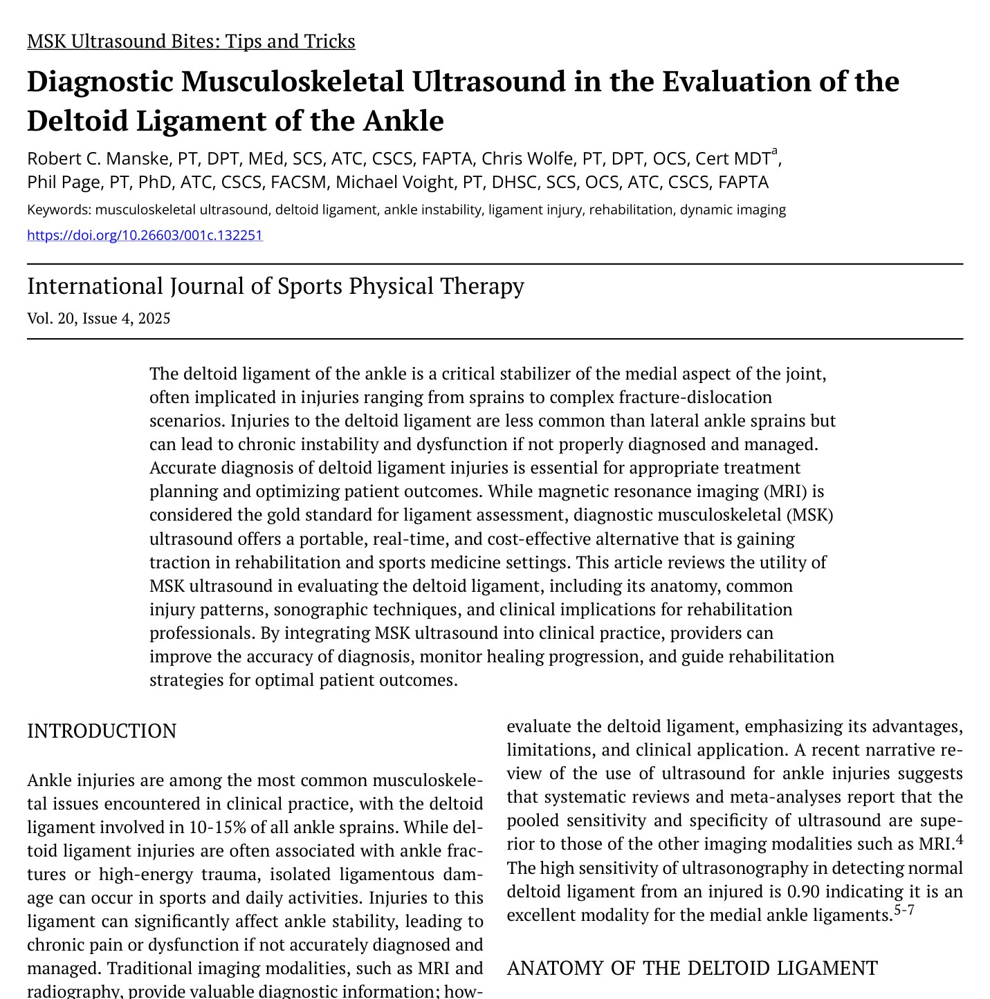
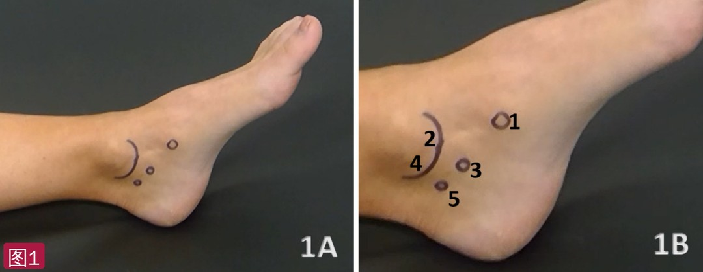
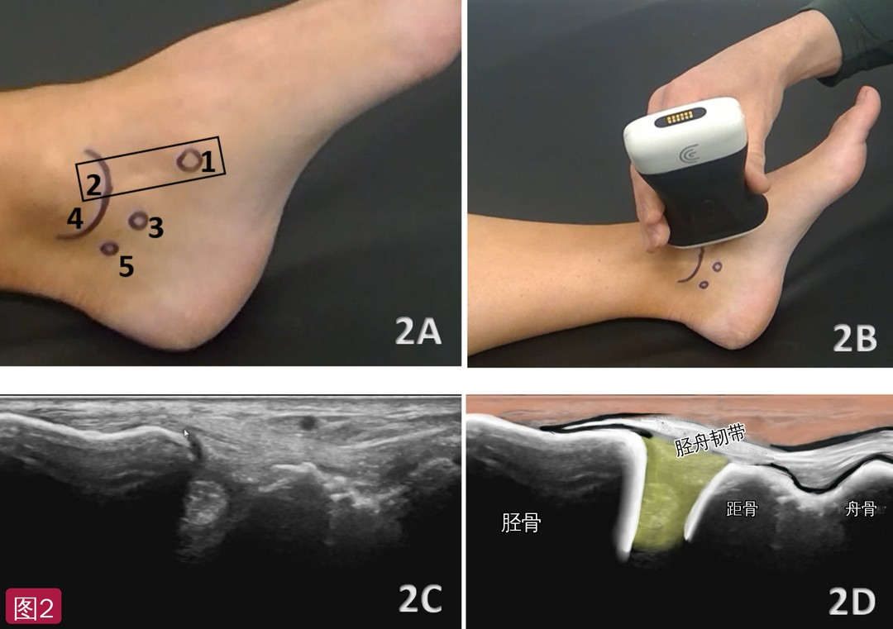
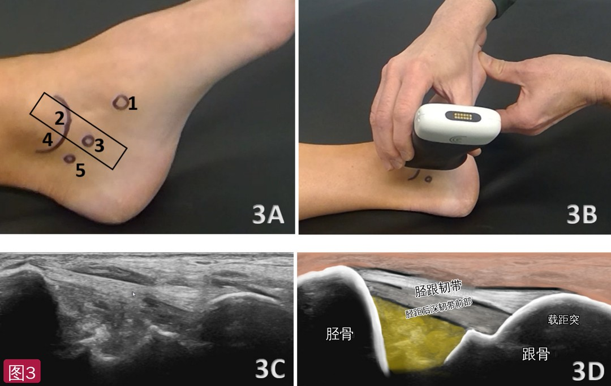
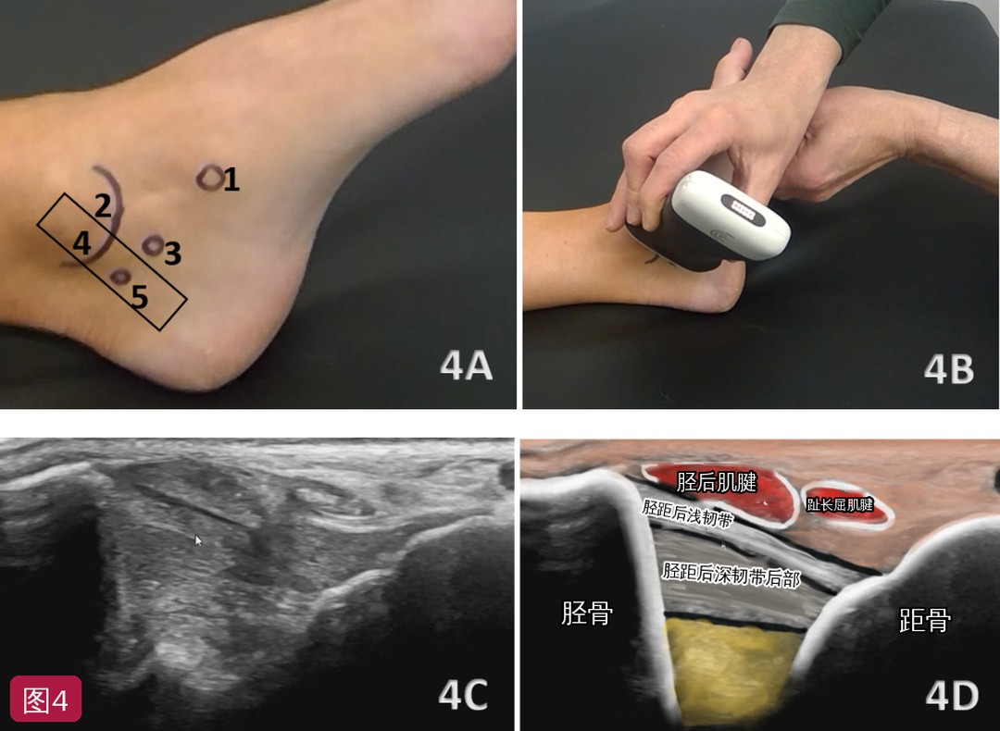
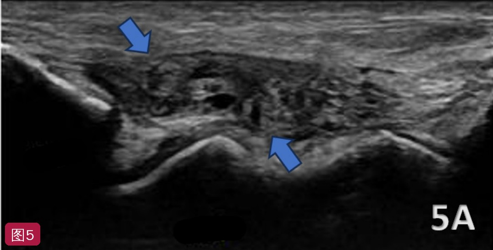
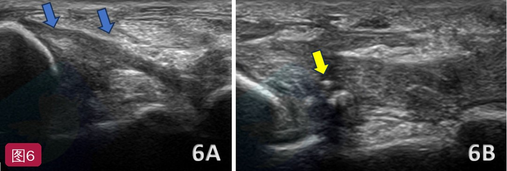
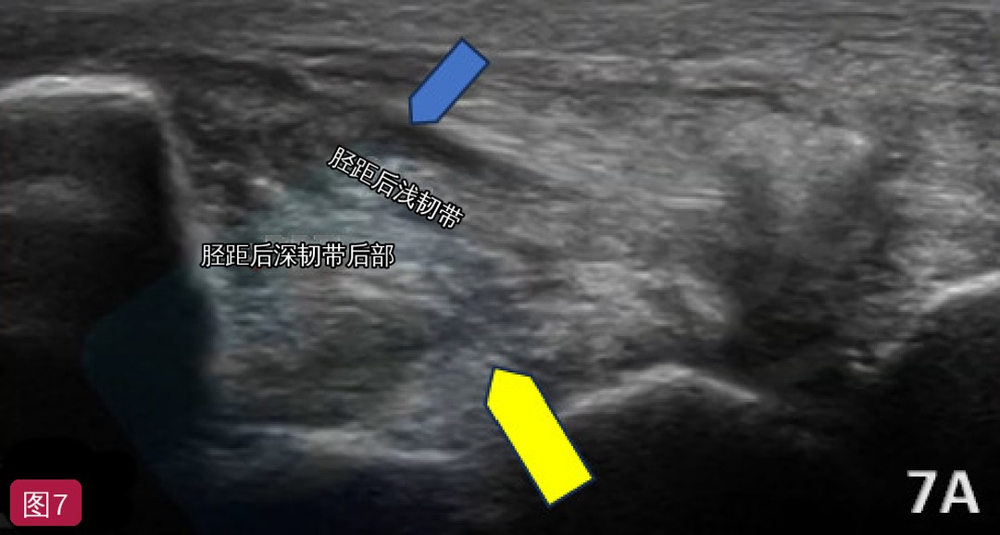

🔖原文首页（IJSPT 2025 年第 20 卷第 4 期，“肌骨超声小贴士”栏目）
📚 文献卡片
▪ 英文原题：Diagnostic Musculoskeletal Ultrasound in the Evaluation of the Deltoid Ligament of the Ankle（诊断性肌骨超声评估踝关节三角韧带）
▪ 作者：Robert C. Manske, PT, DPT · Chris Wolfe, PT, DPT · Phil Page, PT, PhD · Michael Voight, PT, DHSc
▪ 栏目：MSK Ultrasound Bites: Tips and Tricks（肌骨超声小贴士）
▪ 期刊：International Journal of Sports Physical Therapy（IJSPT）
▪ 年卷期：2025;20(4):641-647
▪ PMCID：PMC11964700
▪ 关键词：musculoskeletal ultrasound · deltoid ligament · ankle instability · ligament injury · rehabilitation · dynamic imaging
踝扭伤是临床最常见的肌骨问题之一，三角韧带受累占所有踝扭伤的 10%～15%。它常与踝骨折或高能量创伤同时发生，但运动和日常活动中也可能单独损伤；如果没有准确诊断和处理，可能导致慢性疼痛和内侧不稳。
MRI 是韧带评估的金标准，但费用、可及性和等待时间限制了它在康复场景中的使用。肌骨超声便携、实时、便宜，还能做动态应力检查——外翻应力下内侧结构的移位即可诊断三角韧带损伤。文中引用的综述称，超声区分正常与损伤三角韧带的敏感度达 0.90。
| 项目 | 要点 |
|---|---|
| 探头 | 高频线阵探头（7～15 MHz），沿内踝放置，调整角度兼顾浅层和深层、前部和后部 |
| 体位 | 仰卧（或侧卧），髋膝伸直，下肢外旋；看胫跟韧带和后部纤维时把踝背屈，给韧带静态牵伸 |
| 三个切面 | 内踝前丘 → 舟骨结节（胫舟韧带）；内踝前丘 → 载距突（胫跟韧带 + 胫距后深韧带前部）；内踝后丘 → 距骨后内侧结节（胫距后浅韧带 + 胫距后深韧带后部） |
| 正常表现 | 浅层为高回声、纤维状、边界连续清楚；深层纤维因位置较深可呈低回声 |
| 急性损伤 | 水肿性低回声增厚、纤维结构中断、部分/完全撕裂、关节积液；能量多普勒看充血 |
| 慢性损伤 | 韧带变薄、低回声，周围纤维化或钙化，应力下动态不稳 |
| 局限 | 依赖操作者；深部和骨性/关节内病变仍需 MRI |
一句话概括：记住 5 个骨性标志、3 个切面，对比健侧并加应力动态观察，超声就能快速判断三角韧带各部分是否受伤。
三角韧带也叫踝内侧副韧带，是位于踝内侧的双层三角形结构，从内踝延伸到足部诸骨。它抵抗外翻，并限制距骨外旋。经典损伤机制是强力外翻，常合并外踝骨折；另一机制是内翻扭伤，尤其见于慢性外侧不稳的患者。
| 层次 | 组成 | 主要作用 |
|---|---|---|
| 浅层 | 胫跟韧带（胫骨 → 跟骨）；胫舟韧带（向舟骨延伸）；胫距后浅韧带（稳定距骨后部） | 广泛对抗外翻 |
| 深层 | 胫距前韧带；胫距后深韧带 | 稳定距骨，对抗内移和外旋（过度旋转） |
理解分层结构和功能，是准确超声评估和区分损伤严重程度的前提。
• 实时成像：可在关节活动中动态评估韧带完整性
• 高分辨率：能显示三角韧带的各个组成部分
• 可及、省钱：便携、普及，比 MRI 便宜
• 动态应力测试：在功能动作中直接看到韧带被拉长或断裂
• 局限：依赖操作者经验；深部结构显示不如 MRI；骨和钙化会产生伪像，需要调整探头位置和频率
• 探头：高频线阵 7～15 MHz
• 体位：仰卧或侧卧，踝轻度跖屈，便于看内侧结构（文中配图则采用仰卧、髋膝伸直、下肢外旋，并在部分切面把踝背屈）
• 动态评估：外翻应力或背屈等应力手法，显示韧带不稳或断裂
• ① 浅层：从内踝开始向远端扫查胫跟韧带和胫舟韧带；用能量多普勒寻找提示炎症或急性损伤的充血；注意提示水肿的低回声区和纤维结构中断
• ② 深层：靠近距骨评估；在静态和动态模式之间逐步切换，可发现部分撕裂或扭伤
• ③ 对比健侧：以健侧为基线，尤其适用于怀疑部分撕裂时

🔖图1：体位与骨性标志。1A 仰卧，髋膝伸直，下肢外旋；1B 标记：(1) 舟骨结节，(2) 内踝前丘，(3) 跟骨载距突，(4) 内踝后丘，(5) 距骨后内侧结节
正常三角韧带浅层呈高回声、纤维状、边界连续清楚；深层纤维因位置较深可呈低回声。后部三角韧带回声更低，深层胫距纤维不如前部浅层韧带清楚。应力手法可帮助确认韧带完整。
仰卧、髋膝伸直、下肢外旋。探头沿内踝前丘（标志 2）与舟骨结节背侧（标志 1）的连线放置，长轴切面上即可看到胫舟韧带纤维。

🔖图2：胫舟韧带。2A 探头位置（黑框连接标志 2 与 1）；2B 实际放置；2C 正常长轴声像图；2D 标注图：胫骨与距骨、舟骨浅层的胫舟韧带（标注已改为中文）
检查者把患者踝背屈，给胫跟韧带施加静态牵伸。探头沿内踝前丘（标志 2）与跟骨载距突（标志 3）的连线放置，可同时看到浅层的胫跟韧带和其深面从内踝到距骨的胫距后深韧带前部纤维。

🔖图3：胫跟韧带与胫距后深韧带前部。3A 探头位置（连接标志 2 与 3）；3B 背屈下放置探头；3C 正常长轴声像图；3D 标注图：胫骨、载距突/跟骨之间浅层为胫跟韧带，深层为胫距后深韧带前部（标注已改为中文）
同样背屈踝关节，探头沿内踝后丘（标志 4）与距骨后内侧结节（标志 5）的连线长轴放置。关键参照是短轴切面上的胫后肌腱——它正下方就是后部三角韧带的深层关节囊带。

🔖图4：胫距后浅韧带与胫距后深韧带后部。4A 探头位置（连接标志 4 与 5）；4B 实际放置；4C 正常长轴声像图；4D 标注图：胫后肌腱、趾长屈肌腱深面依次为胫距后浅韧带和胫距后深韧带后部（标注已改为中文）
| 类型 | 超声征象 |
|---|---|
| 急性扭伤 | 水肿导致的低回声增厚；纤维结构中断；部分或完全撕裂，可见不连续或回缩；伴关节积液 |
| 慢性损伤与功能不全 | 韧带变薄、回声减低；韧带周围纤维化或钙化；应力手法下动态不稳 |

🔖图5：胫舟韧带完全断裂。长轴切面上韧带呈低回声中断（蓝箭头）；把踝关节完全跖屈做应力成像，可进一步确认完全撕裂（对照图 2）

🔖图6：胫跟韧带和胫距后深韧带前部部分撕裂。6A 胫骨近端附着处部分撕裂，胫跟韧带增厚，两条韧带均呈低回声（蓝箭头）；6B 增厚韧带内可见钙化（黄箭头）（对照图 3）

🔖图7：胫距后浅韧带慢性增厚（蓝箭头）和胫距后深韧带后部部分撕裂（黄箭头），后者呈不均匀低回声（对照图 4；标注已改为中文）
• 早期发现、准确分级：快速区分扭伤与更严重的撕裂，指导治疗计划
• 动态功能测试：治疗中监测恢复、动态评估韧带功能；系列超声帮助判断韧带重塑情况，以及是否可以进阶
• 引导介入：超声引导精准注射，如糖皮质激素抗炎或富血小板血浆（PRP）促进韧带再生
• 患者教育：实时图像直观解释损伤，建立合理的恢复预期
• 局限：怀疑骨性结构损伤或深部关节内病变等复杂情况时，超声不能完全替代 MRI；对操作技术的要求也限制了它的普及
• 证据级别低：简短的技术栏目文章，没有原始数据，以作者经验和少量文献为主
• 亮点：5 个骨性标志 + 3 个标准切面，配有探头摆放照片、正常声像图、标注图和对应的病理图，非常适合入门
• “超声优于 MRI”的说法需谨慎：引言称系统评价显示超声的合并敏感度和特异度优于 MRI 等，但结论部分又说 MRI 是金标准、超声不能完全替代；敏感度 0.90 的来源和研究条件未交代
• 名称不统一：解剖部分说深层由“胫距前韧带和胫距后深韧带”组成，图中却用“胫距后深韧带前部/后部”；图 4 图注把胫距后浅韧带也称为“深层后部三角韧带”
• 体位前后不一：技术部分写踝“轻度跖屈”，而图 3、图 4 的方法是踝“背屈”牵伸韧带
• 图注笔误：图 6 图注写“图 7B 可见钙化”，应为图 6B；图 2D 原标注“Tibonavicular”拼写错误；正文另有“offers and readily”“it’s”等笔误
① 解剖：浅层（胫跟、胫舟、胫距后浅）抗外翻，深层（胫距前、胫距后深）稳定距骨、抗外旋
② 标志：舟骨结节、内踝前丘、载距突、内踝后丘、距骨后内侧结节
③ 切面：前丘 → 舟骨结节；前丘 → 载距突；后丘 → 距骨后内侧结节（以胫后肌腱为参照）
④ 正常：浅层高回声纤维状、边界连续；深层和后部回声偏低属正常
⑤ 异常：低回声增厚、纤维中断、钙化、变薄，应力下不稳；能量多普勒看充血
★ 技巧：对比健侧、加应力动态观察；复杂病例仍需 MRI
欢迎关注悦美力公众号，获取更多物理治疗的专业知识！
📄参考文献：
Manske RC, Wolfe C, Page P, Voight M. Diagnostic Musculoskeletal Ultrasound in the Evaluation of the Deltoid Ligament of the Ankle. Int J Sports Phys Ther. 2025;20(4):641-647. PMCID: PMC11964700.
文中 7 张图片均来自原文：图 2D、3D、4D、7A 解剖标注已改为中文；表格为编者整理，仅用于学术交流。